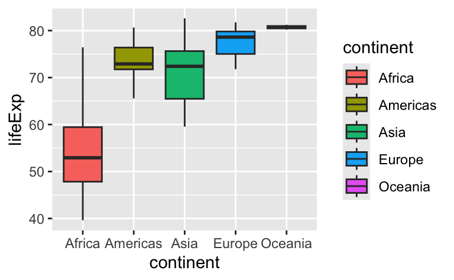
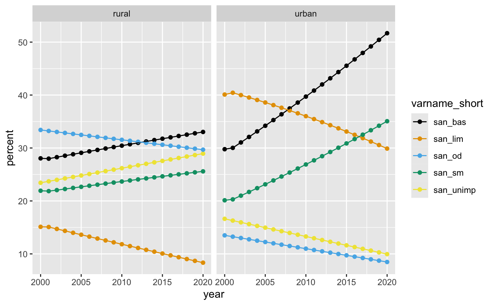

- Learners can apply ten functions from the dplyr R Package to generate a subset of data for use in a table or plot.
Data transformation with dplyr
ds4owd - data science for openwashdata
Lars Schöbitz
ETH Zurich
Sep 25, 2025
Quiz Module 1
Due date extended!
- Original due date:
September 25th - New due date: October 2nd, 2025 (as for Quiz 2)
- Quiz completion rate currently at ~40%
- Extra week to complete the quiz
Submission verification
- We’ve created a table for you to verify your quiz submission
- Check if your submission has been recorded
- Link will be provided on course website after today’s module
Learning Objectives (for this week)
Data wrangling with dplyr
A grammar of data wrangling…
… based on the concepts of functions as verbs that manipulate data frames

select: pick columns by namearrange: reorder rowsfilter: pick rows matching criteriarelocate: changes the order of the columnsmutate: add new variablessummarise: reduce variables to valuesgroup_by: for grouped operations- … (many more)
R fundamentals
Packages
Functions & Arguments
- Function:
filter() - Argument:
.data = - Arguments following:
year == 2007What to do with the data
Functions & Arguments
- Function:
filter() - Argument:
.data =Does not need to be spelled out - Arguments following:
year == 2007
Objects
- Function:
filter() - Argument:
.data = - Arguments following:
year == 2007 - Assignment operator:
<-Assigns the result to an object - Object:
gapminder_2007Name of the object that stores result
Operators
- Function:
filter() - Argument:
.data = - Arguments following:
year == 2007 - Object:
gapminder_2007 - Assignment operator:
<- - Pipe operator:
|>Passes the result into the first argument of the next function
Rules
Rules of dplyr functions:
- First argument is always a data frame
- Subsequent arguments say what to do with that data frame
- Always return a data frame
- Don’t modify in place
Plot

Our turn: SDG 6.2.1
Data
| name | iso3 | year | region_sdg | varname_short | varname_long | residence | percent |
|---|---|---|---|---|---|---|---|
| Afghanistan | AFG | 2000 | Central and Southern Asia | san_bas | basic sanitation services | national | 21.9 |
| Afghanistan | AFG | 2000 | Central and Southern Asia | san_bas | basic sanitation services | rural | 19.3 |
| Afghanistan | AFG | 2000 | Central and Southern Asia | san_bas | basic sanitation services | urban | 30.9 |
| Afghanistan | AFG | 2000 | Central and Southern Asia | san_lim | limited sanitation services | national | 5.6 |
| Afghanistan | AFG | 2000 | Central and Southern Asia | san_lim | limited sanitation services | rural | 3.1 |
| Afghanistan | AFG | 2000 | Central and Southern Asia | san_lim | limited sanitation services | urban | 14.5 |
Data
| varname_short | varname_long | n |
|---|---|---|
| san_bas | basic sanitation services | 14742 |
| san_lim | limited sanitation services | 14742 |
| san_od | no sanitation facilities | 14742 |
| san_sm | safely managed sanitation services | 14742 |
| san_unimp | unimproved sanitation facilities | 14742 |
Our turn: md-03-exercises
- Open posit.cloud/spaces/663318/content in your browser.
- Verify that the ds4owd workspace is open.
- Click Start next to md-03-exercises.
- In the File Manager in the bottom right window, locate the
01-dplyr-our-turn.qmdfile and click on it to open it in the top left window.
15:00
Take a break
Please get up and move!
10:00
Image generated with DALL-E 3 by OpenAI
Your turn: md-03-exercises
- Open posit.cloud/spaces/663318/content in your browser.
- Verify that the ds4owd workspace is open.
- Click Start next to md-03-exercises.
- In the File Manager in the bottom right window, locate the
02-dplyr-your-turn.qmdfile and click on it to open it in the top left window.
25:00
R Terminology
- Function:
filter() - Arguments following:
residence == "national", etc.What to do with the data - Data (Object):
sanitation_national_2020_sm - Assignment operator:
<- - Pipe operator:
|>
Task 1.2
- Use the
filter()function to create a subset from thesanitationdata containing urban and rural estimates for Nigeria. - Store the result as a new object in your environment with the name
sanitation_nigeria_urban_rural
Task 1.3 - Connected scatterplot
Great for timeseries data
Use the
ggplot()function to create a connected scatterplot withgeom_point()andgeom_line()for the data you created in Task 1.2.Use the
aes()function to map the year variable to the x-axis, thepercentvariable to the y-axis, and thevarname_shortvariable to color and group aesthetic.Use
facet_wrap()to create a separate plot for urban and rural populations.Change the colors using
scale_color_colorblind().
Task 1.3 - Connected scatterplot

Our turn: back to 01-dplyr-our-turn.qmd
- Open posit.cloud/spaces/663318/content in your browser.
- Verify that the ds4owd workspace is open.
- Click Start next to md-03-exercises.
- In the File Manager in the bottom right window, locate the
01-dplyr-our-turn.qmdfile and click on it to open it in the top left window.
30:00
Take a break
Please get up and move!
05:00
Image generated with DALL-E 3 by OpenAI
Your turn: md-03-exercises
- Open posit.cloud/spaces/663318/content in your browser.
- Verify that the ds4owd workspace is open.
- Click Start next to md-03-exercises.
- In the File Manager in the bottom right window, locate the
03-dplyr-your-turn.qmdfile and click on it to open it in the top left window.
20:00
Homework assignments module 3
Module 3 documentation
Homework due date
- Homework assignment due: Monday, September 29th 2025
- Quiz due: Tuesday, October 8th 2025
Wrap-up
Thanks! 🌻
Slides created via revealjs and Quarto: https://quarto.org/docs/presentations/revealjs/
Access slides as PDF on GitHub